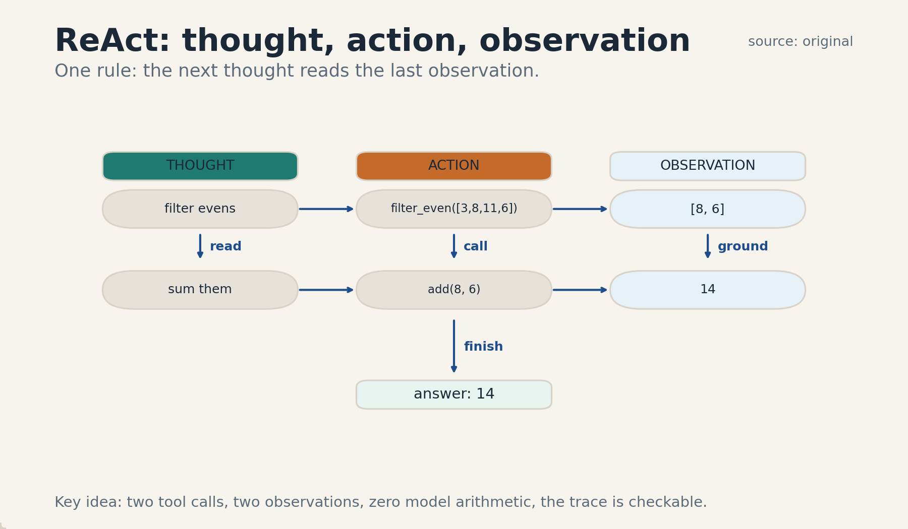
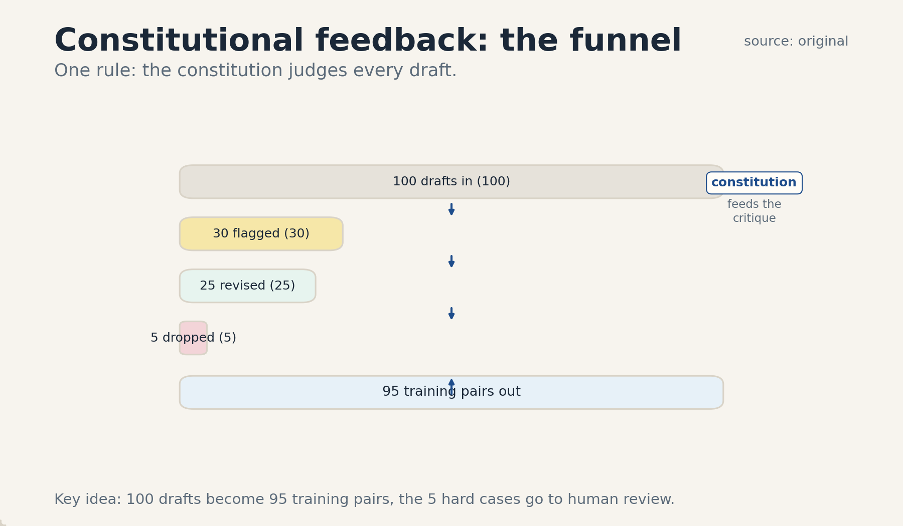
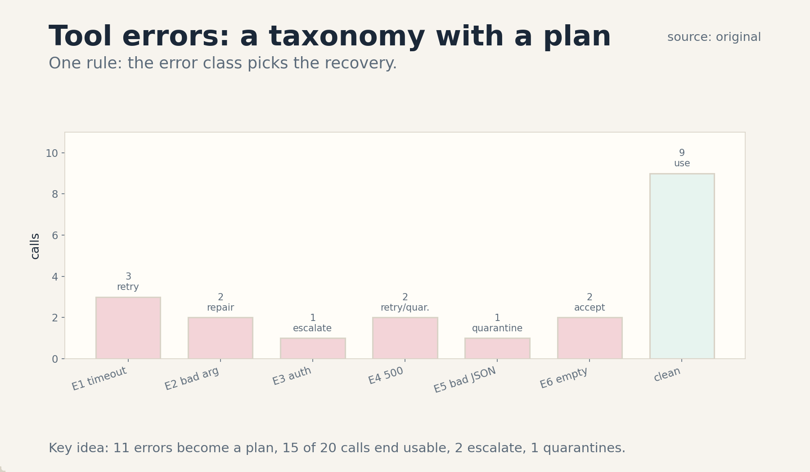

U02 · Feedback, tools, and constitutional learning
U02 , Feedback, tools, and constitutional learning
Course: Stanford CS329A, Autumn 2025. Official session 4 (Oct 3). Baseline: 2026-10-07.
Claim class: mechanisms are taught from the requested inventory with SOURCE
ATTRIBUTION PENDING. Paper titles come from the verified official schedule
(see ../source_manifest.md). No paper contents were individually inspected
by this builder. Toy numbers are computed and traceable.
Unit objectives
After this unit the learner can: run a ReAct loop on a toy task, separate execution feedback from model feedback, write a tool-error taxonomy with recovery actions, distinguish a critique from a learning update, describe constitutional feedback and RLEF at mechanism level, name reward-signal failure modes including shortcut exploitation, and design an independent validation gate.
Dependencies
P17 (reinforcement learning), P20 (tools, APIs, agent state), P21
(security, privacy, safety). Local remediation is inside C01, C07, and C12.
The shared bridges live at ../shared/prerequisites/.
Four-way link used in this unit
Intuition: an agent that acts gets told what happened. Equation: the policy update follows the reward gradient on tool-grounded trajectories. Code: a loop that emits thought, action, observation triples until a stop rule fires. Observation: traces with execution feedback fix their own errors, traces without it repeat them.
C01 ReAct
1. Source mapping, scope, objectives, dependencies. Session 4, Learning from feedback with tools/code. Reading pointer: Yao et al. 2022, ReAct (SOURCE ATTRIBUTION PENDING). Scope: the thought, action, observation loop for tool use. No weight change in the basic loop. Objective: write and run a three-step toy trace. Dependencies: P20.
2. Motivating question and tiny toy. Question: the model must answer “what is 23 * 47?” without trusting its own arithmetic. How does it structure the work? Toy trace: thought: “I need a product. I will call the calculator.” action: calc.multiply(23, 47). observation: 1081. thought: “The product is 1081. I can answer now.” Check: 23 * 47 = 1081. Correct.
3. Plain-language mental model. Think out loud, act with a tool, read what came back, repeat. The thought is the plan. The action is the tool call. The observation is reality answering back. The loop keeps the model honest because the observation is not generated by the model.
4. Variables, units, shapes, assumptions. Step k: (thought_k, action_k, observation_k). action_k: tool name plus typed arguments. observation_k: typed tool return. Stop rule: a max step count or a finish action. Assumptions: tools are named and typed, the observation is trustworthy, the trace fits in context.
5. Justified derivation or mechanism. There is no theorem, the mechanism is structural. Interleaving reasoning with acting grounds each next thought in an external result instead of a self-generated guess. Errors surface as observations (a tool error, a wrong number) where the next thought can see and repair them. The loop works when observations carry new information.
6. Computed numerical example using the same objects. Toy task: “sum the even numbers in [3, 8, 11, 6]”. Trace: thought: “Filter evens, then sum.” action: filter_even([3, 8, 11, 6]). observation: [8, 6]. thought: “Sum them.” action: add(8, 6). observation: 14. Answer 14. Check: evens are 8 and 6, sum 14. Correct. Two tool calls, two observations, zero model arithmetic.
7. Algorithm and original minimal implementation.
def react_loop(task, tools, max_steps=6):
trace = []
thought = "Start: " + task
for _ in range(max_steps):
action = propose_action(thought, tools)
if action["name"] == "finish":
return trace, action["args"]["answer"]
observation = tools[action["name"]](**action["args"])
trace.append((thought, action, observation))
thought = "Observed %r. Next step?" % (observation,)
return trace, None
def propose_action(thought, tools):
raise NotImplementedError("policy goes here")
8. Correctness checks and expected output. Check: with a scripted propose_action that emits the two toy calls then finish, the loop returns answer 14 and a two-step trace. Check: the loop stops at max_steps and returns None instead of looping forever.
9. Complexity, memory, statistical efficiency, stability, practical costs. Time: one model call per step plus tool latency. Memory: the trace grows with steps, long traces overflow context. Cost: each step is a full model call. Stability: a bad tool result can trap the loop in retries, the stop rule is load-bearing.
10. Nearest alternatives and precise selection boundaries. Act-only (no thought): pick when the action space is tiny and thoughts add cost. Plan-then-execute: pick when the full plan is known upfront and tools are reliable. ReAct: pick when the next action depends on the last observation.
11. Failure case, broken assumption, counterexample. Break observation trust: the tool returns a plausible wrong number and the model cannot check it. The trace then confidently reports the wrong answer. Counterexample: a calculator tool with a rounding bug, every trace inherits the bug and no thought step can detect it.
12. Research reading and falsifiable extension. Reading: Yao et al. 2022 (SOURCE ATTRIBUTION PENDING). Extension: hypothesis: ReAct beats act-only on tasks where observations change the plan. Falsification: equal scores on a task family with informative observations, which would mean the thoughts add no value there.
13. Breadth recall, deep oral ladder, unfamiliar transfer. Recall: name the three fields and their order. Ladder: define the step, run the toy, justify grounding in observations, code the loop, state the per-step cost, compare with plan-then-execute, debug the untrusted-tool failure, critique the observation-trust assumption, design the ReAct versus act-only test. Transfer: a lab robot that senses, moves, and re-senses uses the same loop.
14. Lab/exercises with answers separated.
E1.1: write a three-step trace for “concatenate ‘ab’ and ‘cd’, then
upper-case”. E1.2: state the stop rule in one sentence and explain why
it is load-bearing. E1.3: give a task where act-only beats ReAct.
Answers: ../keys/u02_answers.md.
15. Visual units, provenance, accessibility, audit rows.
Figure ../visuals/u02_fig01.png: the item-6 trace as a vertical
thought/action/observation ladder with arrows, two tool calls, final
answer chip. Provenance: original, values from item 6. Alt text: three
columns of chips (thought, action, observation) in two rows, arrow to
the answer 14. Audit: numbers match item 6.

C02 execution feedback
1. Source mapping, scope, objectives, dependencies. Session 4. Scope: feedback that comes from running something in the world: a test result, an error trace, a tool return code. Objective: classify feedback as execution versus model-generated and show why the difference matters. Dependencies: C01, P20.
2. Motivating question and tiny toy. Question: the agent writes a function and it fails a test. Who tells the agent, and can the teller be wrong? Toy: function f(x) = x + 1 claimed to double. Test: f(3) == 6. Execution feedback: AssertionError, got 4, expected 6. This feedback cannot hallucinate: the test ran.
3. Plain-language mental model. Execution feedback is the world pushing back. Model feedback is the model talking to itself. The world can be harsh but it does not flatter. The model can be kind but it can also lie.
4. Variables, units, shapes, assumptions. Feedback item: (source, content, trustworthy_flag). Sources: test runner, compiler, tool API, human, model self-critique. Assumptions: the test itself is correct, the sandbox runs the code the agent wrote.
5. Justified derivation or mechanism. The mechanism is causal: the feedback is computed from the artifact, not sampled from a distribution over words. That causal link is what makes repair possible: change the code, rerun, watch the feedback change. The learning signal is the delta between runs.
6. Computed numerical example using the same objects. Toy: three repair rounds. Round 1: f(x) = x + 1, test f(3) == 6, got 4, fail. Round 2: f(x) = x * 2 - 1, got 5, fail. Round 3: f(x) = x * 2, got 6, pass. Feedback sequence: [fail by 2, fail by 1, pass]. The error magnitude shrinks: 2, 1, 0. The agent can hill-climb on the magnitude.
7. Algorithm and original minimal implementation.
def repair_loop(code, tests, max_rounds=3):
history = []
for _ in range(max_rounds):
result = run_tests(code, tests)
history.append(result)
if result["passed"]:
return code, history
code = propose_fix(code, result)
return code, history
def run_tests(code, tests):
raise NotImplementedError("sandbox goes here")
8. Correctness checks and expected output. Check: with a scripted run_tests that fails twice then passes, the loop returns after 3 rounds with history length 3. Check: immediate pass returns after 1 round.
9. Complexity, memory, statistical efficiency, stability, practical costs. Cost: one sandbox run per round. The sandbox is the expensive part to build, not to run. Stability: flaky tests (U05 C08) inject noise into the signal, the loop then chases ghosts.
10. Nearest alternatives and precise selection boundaries. Model self-critique: pick when no executable check exists. Human feedback: pick when correctness needs judgment, not just execution. Execution feedback: pick when the artifact runs and the check is exact.
11. Failure case, broken assumption, counterexample. Break test correctness: the test itself has the bug (expects 7 for f(3)). The loop “repairs” good code into bad code and the feedback confirms it. Counterexample: a test that passes for the wrong reason, such as an empty test body.
12. Research reading and falsifiable extension. Reading: execution-feedback sections of the session-4 papers (SOURCE ATTRIBUTION PENDING). Extension: hypothesis: repair with execution feedback beats repair with self-critique on code tasks. Falsification: equal fix rates, which would mean the tests add no information beyond the critique.
13. Breadth recall, deep oral ladder, unfamiliar transfer. Recall: define execution feedback and its causal property. Ladder: define the feedback item, run the toy, justify the causal link, code the loop, state sandbox cost, compare with self-critique, debug the buggy-test failure, critique test trust, design the fix-rate test. Transfer: a compiler error is execution feedback for a programmer.
14. Lab/exercises with answers separated.
E2.1: list the feedback sequence for a repair that fails, fails, then
passes. E2.2: explain the causal link in two sentences. E2.3: name one
way a test can lie. Answers: ../keys/u02_answers.md.
15. Visual units, provenance, accessibility, audit rows.
Table plate in the lesson (item 6: round, code, feedback, error
magnitude). No separate PNG: comparison of values. Logged in
../visual_audit.md.
C03 code/tests
1. Source mapping, scope, objectives, dependencies. Session 4. Scope: code as the artifact and tests as the verifier in the agent loop. Objective: write a minimal test that pins one behavior and show the agent loop using it. Dependencies: C02, P02.
2. Motivating question and tiny toy. Question: what is the smallest test that still teaches the agent something? Toy: behavior “double the input”. Test: assert double(3) == 6 and double(0) == 0. Two cases pin the behavior on positive and zero input.
3. Plain-language mental model. A test is a contract in code. The agent proposes. The contract disposes. A good contract is small, exact, and fast.
4. Variables, units, shapes, assumptions. Test: (input, expected, comparator). Suite: list of tests. Signal: pass/fail per test plus an error message. Assumptions: the expected values are right, the comparator matches the value type.
5. Justified derivation or mechanism. Tests turn an open-ended generation task into a search task with a binary objective: find code that passes. The mechanism is the same generate-and-test loop as C02, specialized to code. Test quality sets the ceiling: the agent can only be as right as the suite.
6. Computed numerical example using the same objects. Toy: candidate codes for “double”. A: x + x. B: x * 2. C: x + 1. Suite: [(3, 6), (0, 0), (-4, -8)]. A passes 3/3. B passes 3/3. C passes 1/3 (only (0, 0)). Score vector: [1.0, 1.0, 0.333]. Selection picks A or B by the tie rule.
7. Algorithm and original minimal implementation.
def score_candidate(fn, suite):
passed = 0
for inp, expected in suite:
try:
if fn(inp) == expected:
passed += 1
except Exception:
pass
return passed / len(suite)
8. Correctness checks and expected output. Check: score_candidate(lambda x: x + x, [(3, 6), (0, 0), (-4, -8)]) returns 1.0. Check: a raising function scores 0.0 without crashing the scorer.
9. Complexity, memory, statistical efficiency, stability, practical costs. O(tests) per candidate. Suites stay small and fast, slow suites kill the loop’s iteration speed. Note: exception swallowing is a toy simplification, production logs the traceback.
10. Nearest alternatives and precise selection boundaries. Property-based tests: pick when input space is large and examples are sparse. Human review: pick when the spec is ambiguous. Example tests: pick when the behavior is concrete and small.
11. Failure case, broken assumption, counterexample. Break suite quality: the suite only tests (0, 0). Candidate C (x + 1) passes and is selected. The agent is exactly as right as the suite, and the suite was wrong-shaped. Counterexample: a test with a typo in the expected value.
12. Research reading and falsifiable extension. Reading: session-4 code papers (SOURCE ATTRIBUTION PENDING). Extension: hypothesis: adding one edge-case test per round raises the selected candidate’s true correctness. Falsification: flat true correctness as the suite grows, which means the added tests carry no new information.
13. Breadth recall, deep oral ladder, unfamiliar transfer. Recall: define the test triple and the ceiling claim. Ladder: define the suite, run the toy, justify generate-and-test, code the scorer, state per-candidate cost, compare with property tests, debug the single-test failure, critique suite trust, design the suite-growth test. Transfer: exam questions are tests for student code.
14. Lab/exercises with answers separated.
E3.1: score candidates A, B, C from item 6 by hand. E3.2: construct a
suite that C passes fully. E3.3: state the ceiling claim in one
sentence. Answers: ../keys/u02_answers.md.
15. Visual units, provenance, accessibility, audit rows.
Table plate in the lesson (item 6: candidate, per-test results,
score). No separate PNG. Logged in ../visual_audit.md.
C04 RLEF reading
1. Source mapping, scope, objectives, dependencies. Session 4. Reading pointer: RLEF: Grounding Code LLMs in Execution Feedback with Reinforcement Learning (SOURCE ATTRIBUTION PENDING). Scope: reinforcement learning where the reward comes from execution feedback. This is a reading concept: the mechanism is taught, the paper contents are not claimed. Objective: write the RLEF loop in pseudocode and name its reward. Dependencies: C02, C03, P17.
2. Motivating question and tiny toy. Question: the agent gets a test failure. How does that failure become a weight change? Toy: policy writes code, tests run, reward = fraction of tests passed. Trajectory reward 0.333 (candidate C from C03). A policy gradient step raises the probability of trajectories like the passing ones.
3. Plain-language mental model. RLHF learns from human thumbs. RLEF learns from the test runner’s verdict. The test runner is a tireless, honest, narrow judge. The policy climbs toward code that passes.
4. Variables, units, shapes, assumptions. Reward r = passed / total, in [0, 1]. Policy pi_theta over code tokens. Update: policy gradient on (trajectory, reward) pairs. Assumptions: the tests measure the true goal, the reward is not gamed (see C11).
5. Justified derivation or mechanism. The policy gradient estimator: gradient ≈ E[r * grad log pi_theta]. Trajectories with high test-pass rates get reinforced. Execution feedback grounds the reward: it is computed from runs, not from a learned preference model, so it cannot drift with the policy’s flattery. The mechanism needs the tests to stay fixed while the policy moves, moving tests break the comparison.
6. Computed numerical example using the same objects. Toy: two trajectories. T1 reward 1.0, T2 reward 0.333. Baseline b = mean = 0.6667. Advantages: A1 = 0.3333, A2 = -0.3333. The update raises log-probability of T1 and lowers T2, weighted by 0.3333. One gradient-free illustration of the direction, not a real step.
7. Algorithm and original minimal implementation.
def rlef_update(trajectories, rewards, baseline):
updates = []
for traj, r in zip(trajectories, rewards):
advantage = r - baseline
updates.append((traj, advantage))
return updates
8. Correctness checks and expected output. Check: rlef_update([“t1”, “t2”], [1.0, 0.333], 0.6667) returns [(“t1”, 0.3333), (“t2”, -0.3337)] after rounding. Check: zero advantage when all rewards equal the baseline.
9. Complexity, memory, statistical efficiency, stability, practical costs. Cost: one sandbox run per trajectory plus one gradient step. Variance: binary-ish rewards on hard tasks give sparse signal, many trajectories score 0 and teach nothing. Stability: the usual RL variance controls apply (baselines, clipping), taught in U03.
10. Nearest alternatives and precise selection boundaries. RLHF: pick when the goal needs human judgment. Supervised fine-tuning on passing code: pick when passing trajectories already exist and exploration adds little. RLEF: pick when tests define the goal and the policy must discover passing code.
11. Failure case, broken assumption, counterexample. Break test-goal alignment: the tests check formatting, not behavior. The policy learns beautiful formatting and broken logic, and the reward confirms it. This is shortcut exploitation (C11) at training time. Counterexample: reward 1.0 for code that prints the expected outputs without computing them.
12. Research reading and falsifiable extension. Reading: the RLEF paper (SOURCE ATTRIBUTION PENDING). Extension: hypothesis: RLEF beats supervised fine-tuning on held-out tasks when tests are hidden during training. Falsification: equal scores, which would mean the RL exploration added nothing over imitation.
13. Breadth recall, deep oral ladder, unfamiliar transfer. Recall: define the RLEF reward and the update direction. Ladder: define the pair, run the toy, justify the grounded reward, code the update, state variance cost, compare with RLHF, debug the formatting-tests failure, critique test-goal alignment, design the held-out comparison. Transfer: a robot rewarded by task completion sensors is RLEF without code.
14. Lab/exercises with answers separated.
E4.1: compute advantages for rewards [1.0, 0.0, 0.5] with mean
baseline. E4.2: explain the grounded-reward claim in two sentences.
E4.3: name the failure when tests move during training. Answers:
../keys/u02_answers.md.
15. Visual units, provenance, accessibility, audit rows.
Table plate in the lesson (item 6: trajectory, reward, advantage).
No separate PNG. Logged in ../visual_audit.md.
C05 critique versus learning update
1. Source mapping, scope, objectives, dependencies. Session 4. Scope: the sharp line between judging output and changing the model. Objective: classify five feedback events as critique or update and explain the operational difference. Dependencies: C02, P17.
2. Motivating question and tiny toy. Question: the model says “this code is wrong because it ignores empty input”. Did the model learn? Toy: two events. Event A: the model writes a critique of its own code, weights unchanged. Event B: a gradient step on the corrected code, weights changed. Only B is learning.
3. Plain-language mental model. A critique is a note in the margin. A learning update rewrites the chapter. Notes help the next draft. Rewrites change every future draft.
4. Variables, units, shapes, assumptions. Critique: text, no parameter change. Update: delta_theta applied to weights. Assumptions: the critique is read by something that can act. the update uses a valid gradient or equivalent.
5. Justified derivation or mechanism. The distinction is operational, not philosophical. A critique changes the current trace (it becomes context for the next step). An update changes the policy for all future traces. Confusing them causes two errors: expecting a critique to fix the next task, and expecting one gradient step to fix the current trace.
6. Computed numerical example using the same objects. Toy: policy assigns P(buggy) = 0.7, P(fixed) = 0.3. Critique event: trace gets the note, this-trace P(fixed) rises to 0.9 via context, but the stored policy still says 0.7/0.3 for the next task. Update event: one gradient step moves stored P(fixed) from 0.3 to 0.45. Next task starts at 0.45, not 0.3. The numbers show where each effect lives.
7. Algorithm and original minimal implementation.
def apply_critique(trace, critique_text):
return trace + ["critique: " + critique_text]
def apply_update(policy_probs, step_size, advantage):
p = policy_probs["fixed"]
new_p = p + step_size * advantage
return {"fixed": new_p, "buggy": 1.0 - new_p}
8. Correctness checks and expected output. Check: apply_critique([], “ignores empty input”) returns a one-item list. Check: apply_update({“fixed”: 0.3, “buggy”: 0.7}, 0.5, 0.3) returns fixed 0.45.
9. Complexity, memory, statistical efficiency, stability, practical costs. Critiques cost context tokens. Updates cost gradient compute and risk instability. The practical rule: critique inside the trace for this-task repair, update weights for across-task improvement.
10. Nearest alternatives and precise selection boundaries. Prompt update (change the system prompt): a middle path, it persists across traces without gradient steps. Fine-tuning: the heavy update path. In-context critique: the light path.
11. Failure case, broken assumption, counterexample. Break the reading assumption: the critique is written but never read. the next step ignores it. Then the critique changed nothing at all. Counterexample: an update on a mislabeled example moves P(fixed) the wrong way, updates are not automatically improvements.
12. Research reading and falsifiable extension. Reading: constitutional feedback (C06) uses critiques as data for updates, the distinction is load-bearing there. Extension: hypothesis: critique-in-trace fixes more current-task errors per token than an equal-cost gradient step. Falsification: the reverse, measured on repair benchmarks.
13. Breadth recall, deep oral ladder, unfamiliar transfer. Recall: state the operational difference in one sentence. Ladder: define both, run the toy numbers, justify the trace/policy split, code both functions, state the cost of each, compare with prompt updates, debug the unread-critique failure, critique the “updates improve” assumption, design the per-token comparison. Transfer: a code review comment versus a merged fix.
14. Lab/exercises with answers separated.
E5.1: classify: (a) model rewrites its answer after reading a test
failure, (b) trainer runs DPO on the pair. E5.2: explain why a critique
cannot fix the next task. E5.3: give the middle path and when to use
it. Answers: ../keys/u02_answers.md.
15. Visual units, provenance, accessibility, audit rows.
Table plate in the lesson (item 6: event, where the effect lives,
numbers). No separate PNG. Logged in ../visual_audit.md.
C06 constitutional feedback
1. Source mapping, scope, objectives, dependencies. Session 4. Reading pointer: Constitutional AI: Harmlessness from AI Feedback (SOURCE ATTRIBUTION PENDING). Scope: AI feedback guided by a written constitution of principles, used to critique and revise responses, then train on the revisions. This is a reading concept: the mechanism is taught, the paper contents are not claimed. Objective: run a toy constitutional critique-revise loop. Dependencies: C05, P21.
2. Motivating question and tiny toy. Question: how do you get harmlessness feedback without a human in the loop for every example? Toy constitution, two principles: P1 “do not help with wrongdoing”, P2 “explain the refusal briefly”. Draft response: instructions for wrongdoing. Critique under P1: “violates P1”. Revised response: brief refusal per P2. The pair (draft, revised) becomes training data.
3. Plain-language mental model. Write the rules down. Let the model grade its own draft against the rules. Keep the revised version. Train on the revisions. The constitution is the spec, the model is both student and teaching assistant.
4. Variables, units, shapes, assumptions. Constitution: list of principles. Critique: text citing principles. Revision: new response. Training pair: (prompt, revised response). Assumptions: the model can apply the principles, the principles cover the case, the revision is actually better.
5. Justified derivation or mechanism. The loop converts principles into data: critique identifies the violation, revision demonstrates compliance. Supervised training on revisions then distills the constitution into weights (a learning update, C05). The mechanism scales because critique and revision are model-generated, humans write the constitution once, and the loop does the rest.
6. Computed numerical example using the same objects. Toy: 100 drafts. Critique flags 30 as violating P1. Of the 30, 25 revisions pass a second critique, 5 still violate and are dropped. Training set: 70 clean drafts + 25 revisions = 95 pairs. Yield: 95 percent of drafts become training data, the 5 dropped ones are the hard cases for human review.
7. Algorithm and original minimal implementation.
def constitutional_pass(draft, principles):
critique = critique_against(draft, principles)
if critique["violates"]:
revised = revise(draft, critique)
recheck = critique_against(revised, principles)
if recheck["violates"]:
return None
return revised
return draft
def critique_against(draft, principles):
raise NotImplementedError("critic model goes here")
def revise(draft, critique):
raise NotImplementedError("revision model goes here")
8. Correctness checks and expected output. Check: with scripted critics, a violating draft returns a revised draft, a twice-violating draft returns None, a clean draft returns itself.
9. Complexity, memory, statistical efficiency, stability, practical costs. Cost: two model calls per draft (critique + revise), sometimes three with recheck. The constitution is the point of greatest effect: one good principle beats a thousand examples, and one bad principle poisons all of them.
10. Nearest alternatives and precise selection boundaries. Human feedback (RLHF): pick when principles cannot cover the cases. Hard rules/filters: pick when the violation is exactly checkable. Constitutional feedback: pick when principles are statable and scale matters.
11. Failure case, broken assumption, counterexample. Break principle coverage: the constitution says nothing about a new harm category, so the critic waves it through. The loop then trains the model to produce that harm fluently. Counterexample: a revision that satisfies the letter of P2 (brief refusal) while leaking the instructions in the explanation.
12. Research reading and falsifiable extension. Reading: the Constitutional AI paper (SOURCE ATTRIBUTION PENDING). Extension: hypothesis: constitutional training cuts violation rate on held-out harm categories, not just trained ones. Falsification: cuts only on trained categories, which would show memorization of cases, not principle following.
13. Breadth recall, deep oral ladder, unfamiliar transfer. Recall: name the four steps (principles, critique, revise, train). Ladder: define the loop, run the toy numbers, justify data-from- principles, code the pass, state the per-draft cost, compare with RLHF, debug the uncovered-category failure, critique the model-can-apply-principles assumption, design the held-out-category test. Transfer: a style guide plus an editor plus a writer is the same loop with humans.
14. Lab/exercises with answers separated.
E6.1: compute the training-set yield for 200 drafts with 50 flagged
and 40 successfully revised. E6.2: explain why one principle beats a thousand examples in two
sentences. E6.3: construct the letter-of-the-law counterexample.
Answers: ../keys/u02_answers.md.
15. Visual units, provenance, accessibility, audit rows.
Figure ../visuals/u02_fig02.png: the item-6 funnel: 100 drafts in,
30 flagged, 25 revised, 5 dropped, 95 training pairs out, with the
constitution chip feeding the critique step. Provenance: original,
values from item 6. Alt text: funnel diagram with counts at each
stage. Audit: counts match item 6.

C07 reward signals
1. Source mapping, scope, objectives, dependencies. Session 4. Scope: what the scalar reward says and what it leaves out. Objective: write three reward functions for one code task and compare their failure modes. Dependencies: C02, C03, P17. Local remediation: reward as scalar feedback is defined here from scratch.
2. Motivating question and tiny toy. Question: three rewards for “write a sort function”: R1 = tests passed / total, R2 = 1 if the code contains the word “sorted” else 0, R3 = human thumbs up/down. Which teaches sorting? Toy: candidate uses the built-in sorted() on the test inputs only via a lookup table. R1 = 1.0, R2 = 1.0, R3 = 0. Only R3 sees the trick.
3. Plain-language mental model. A reward is a compass. R1 points at the test suite. R2 points at a word. R3 points at a human. The policy walks where the compass points, not where you meant.
4. Variables, units, shapes, assumptions. r in R, attached to a step or a trajectory. Assumptions: the reward correlates with the true goal, the policy cannot change the reward function itself.
5. Justified derivation or mechanism. Policy gradients climb the reward. Any feature that raises the reward without serving the goal gets amplified: this is Goodhart’s mechanism in one line. The defense is reward design plus independent validation (C12): measure the goal with a different instrument than the one that trains.
6. Computed numerical example using the same objects. Toy: 50 candidates. 30 real sorts, 20 lookup-table tricks. R1 scores: real sorts average 0.97, tricks 1.0. Selection by R1 picks tricks over nearly-correct sorts. Expected true quality of the R1 pick: below the average real sort. The numbers show the reward ranking the wrong candidates first.
7. Algorithm and original minimal implementation.
def reward_tests(passed, total):
return passed / total
def reward_keyword(code, word="sorted"):
return 1.0 if word in code else 0.0
def reward_human(vote):
return 1.0 if vote == "up" else 0.0
8. Correctness checks and expected output. Check: reward_tests(3, 4) = 0.75. Check: reward_keyword(“x = sorted(y)”) = 1.0. Check: the three functions disagree on the lookup- table candidate.
9. Complexity, memory, statistical efficiency, stability, practical costs. Test rewards cost sandbox runs. Human rewards cost human time and do not scale. Keyword rewards are free and almost always wrong-shaped.
10. Nearest alternatives and precise selection boundaries. Learned reward model: pick when human labels exist at scale. Test reward: pick when tests define the goal. Human reward: pick when judgment is the goal.
11. Failure case, broken assumption, counterexample. The item-2 toy is the counterexample: R1 and R2 both max out on the trick. Break the correlation assumption and the policy optimizes the proxy, not the goal. This is C11 (shortcut exploitation) at the signal level.
12. Research reading and falsifiable extension. Reading: reward-design discussions in the session-4 papers (SOURCE ATTRIBUTION PENDING). Extension: hypothesis: adding one hidden test per round (C12) cuts trick selection. Falsification: tricks persist, which means the policy finds new proxies.
13. Breadth recall, deep oral ladder, unfamiliar transfer. Recall: name the three rewards and their failure modes. Ladder: define the signal, run the toy, justify the Goodhart step, code the three functions, state the cost of each, compare with learned rewards, debug the trick-selection failure, critique the correlation assumption, design the hidden-test defense test. Transfer: teaching to the test in schools is the same mechanism.
14. Lab/exercises with answers separated.
E7.1: compute the expected R1 pick quality from item 6 in words.
E7.2: explain Goodhart’s mechanism in two sentences. E7.3: name the
defense and why it must use a different instrument. Answers:
../keys/u02_answers.md.
15. Visual units, provenance, accessibility, audit rows.
Table plate in the lesson (item 6: candidate class, R1, R2, R3, true
quality). No separate PNG. Logged in ../visual_audit.md.
C08 constraints
1. Source mapping, scope, objectives, dependencies. Session 4. Scope: hard limits the agent must respect regardless of reward: budgets, permissions, safety rules. Objective: write a constraint checker and show it vetoing a high-reward action. Dependencies: C07, P21.
2. Motivating question and tiny toy. Question: the action with the highest reward deletes the database. What stops it? Toy: actions with (reward, allowed): [(“read”, 0.5, True), (“write_tmp”, 0.8, True), (“drop_db”, 1.0, False)]. The constraint checker vetoes drop_db, the agent picks write_tmp at 0.8.
3. Plain-language mental model. Rewards say “want”. Constraints say “may”. “May” outranks “want”. A constraint is a wall, not a suggestion.
4. Variables, units, shapes, assumptions. Constraint: predicate over (state, action) returning allow/deny, plus a reason string. Assumptions: the checker sees the true action, the policy cannot bypass the checker, deny reasons are logged.
5. Justified derivation or mechanism. Constrained optimization: maximize reward subject to the predicates. The mechanism is a gate before execution: every proposed action passes the checker, and denied actions never reach the tool. This is separate from reward shaping: a large negative reward still lets the action through on exploration, a gate does not.
6. Computed numerical example using the same objects. Item-2 toy: unconstrained argmax picks drop_db at 1.0. Constrained argmax picks write_tmp at 0.8. Cost of the constraint: 0.2 reward. Value of the constraint: the database still exists. The tradeoff is explicit in the numbers.
7. Algorithm and original minimal implementation.
def constrained_pick(actions, constraints):
feasible = []
for name, reward, _ in actions:
if all(c(name) for c in constraints):
feasible.append((name, reward))
if not feasible:
return None
return max(feasible, key=lambda t: t[1])
def no_drop_db(action_name):
return action_name != "drop_db"
8. Correctness checks and expected output. Check: constrained_pick with the item-2 actions and [no_drop_db] returns (“write_tmp”, 0.8). Check: all-denied returns None, and the caller must handle it.
9. Complexity, memory, statistical efficiency, stability, practical costs. O(constraints) per action. The cost is engineer time: the predicate set must cover the real action space, and every new tool needs its predicates reviewed.
10. Nearest alternatives and precise selection boundaries. Reward shaping (penalize bad actions): pick when violations are mild and exploration must continue. Hard gate: pick when the action is irreversible or the stakes are high. Human approval: pick when the predicate cannot be written exactly.
11. Failure case, broken assumption, counterexample. Break checker coverage: the tool renames the action to “remove_db” and no predicate matches. The gate waves it through. Counterexample: a constraint checked on the action name but not on its arguments, so “write” to the wrong path passes.
12. Research reading and falsifiable extension. Reading: safety-constraint material via P21 (SOURCE ATTRIBUTION PENDING for course-specific treatment). Extension: hypothesis: a deny-log review each week catches one bypass attempt per month. Falsification: zero catches with known bypasses present, which means the log review is theater.
13. Breadth recall, deep oral ladder, unfamiliar transfer. Recall: state the gate rule and why it beats reward shaping for irreversible actions. Ladder: define the predicate, run the toy, justify the gate-before-execution, code the checker, state the engineering cost, compare with shaping, debug the rename bypass, critique coverage, design the deny-log test. Transfer: a firewall rule is a constraint, a traffic fine is reward shaping.
14. Lab/exercises with answers separated.
E8.1: compute the constrained pick for rewards [0.9 denied, 0.7, 0.6].
E8.2: explain the shaping-versus-gate difference in two sentences.
E8.3: construct the rename bypass. Answers: ../keys/u02_answers.md.
15. Visual units, provenance, accessibility, audit rows.
Table plate in the lesson (item 2/6: action, reward, gate verdict).
No separate PNG. Logged in ../visual_audit.md.
C09 tool errors
1. Source mapping, scope, objectives, dependencies. Session 4. Scope: a taxonomy of tool failures and the matching recovery for each class. Objective: classify six toy errors and write the recovery rule for each. Dependencies: C01, C02, P20.
2. Motivating question and tiny toy. Question: the tool says “error”. Is that one thing or six things? Toy errors: E1 timeout after 30s, E2 400 bad argument “limit must be >= 1”. E3 401 unauthorized, E4 500 internal, E5 malformed JSON in a 200 response, E6 empty result set.
3. Plain-language mental model. A tool error is a symptom. The disease is one of: the request was bad, the tool is sick, the world changed, or the answer is empty. Treat the disease, not the symptom.
4. Variables, units, shapes, assumptions. Error record: (code, message, retryable_flag, class). Classes: transient, request bug, auth, tool bug, schema drift, empty result. Assumptions: the error message is informative, retry budgets are finite.
5. Justified derivation or mechanism. The classification mechanism is a decision tree on (code, message, history). Transient + no prior retry -> retry with backoff. Request bug -> repair the arguments from the message and resend once. Auth -> stop and escalate, retrying is useless. Tool bug or schema drift -> log, quarantine the tool, escalate. Empty result -> treat as data, not an error. The tree works because each class has a different optimal action.
6. Computed numerical example using the same objects. Toy run of 20 tool calls with errors: E1 x3, E2 x2, E3 x1, E4 x2, E5 x1, E6 x2, clean x9. Recovery outcomes: E1 retried, 2 of 3 succeed on retry. E2 repaired, both succeed. E3 escalated. E4 retried once, 1 of 2 succeeds, 1 quarantined. E5 quarantined. E6 accepted as data. Final: 15 of 20 calls yield usable results, 2 escalations, 1 quarantine, 2 empty-but-valid. The taxonomy turns 11 errors into a plan.
7. Algorithm and original minimal implementation.
def classify_error(code, message, retries_so_far):
if code in (429, 503) or "timeout" in message.lower():
action = "retry" if retries_so_far < 2 else "escalate"
return ("transient", action)
if code in (400, 422):
return ("request_bug", "repair_once")
if code in (401, 403):
return ("auth", "escalate")
if code >= 500:
return ("tool_bug", "quarantine")
return ("unknown", "escalate")
8. Correctness checks and expected output. Check: classify_error(503, “timeout”, 0) = (“transient”, “retry”). Check: classify_error(400, “limit must be >= 1”, 0) = (“request_bug”, “repair_once”). Check: classify_error(401, “x”, 5) = (“auth”, “escalate”).
9. Complexity, memory, statistical efficiency, stability, practical costs. O(1) per error. The real cost is retry storms: unbounded retries on a sick tool multiply load. The retry budget (2 here) is the stability control.
10. Nearest alternatives and precise selection boundaries. Single catch-all retry: pick when error classes are truly unknown and the tool is idempotent. Full taxonomy: pick when tools are many and failures are frequent. Human triage: pick when errors are rare but expensive.
11. Failure case, broken assumption, counterexample. Break message informativeness: the tool returns “error” with code 200 for every failure class. The tree collapses to one branch and every recovery is a guess. Counterexample: a non-idempotent tool (send email) retried on timeout sends the email twice.
12. Research reading and falsifiable extension. Reading: tool-use robustness via P20 (SOURCE ATTRIBUTION PENDING for course-specific treatment). Extension: hypothesis: classified recovery beats blind retry on task success per tool call. Falsification: equal success, which would mean the classes carry no actionable information.
13. Breadth recall, deep oral ladder, unfamiliar transfer. Recall: name the six classes and their recoveries. Ladder: define the record, run the toy counts, justify the decision tree, code the classifier, state the retry-budget role, compare with blind retry, debug the uninformative-message failure, critique message trust, design the recovery comparison. Transfer: hospital triage uses the same shape: classify, then act per class.
14. Lab/exercises with answers separated.
E9.1: classify: 429 “slow down”, 400 “missing field q”, 500 “nil
pointer”, 200 with HTML body. E9.2: explain the retry storm in two
sentences. E9.3: state the non-idempotent retry rule. Answers:
../keys/u02_answers.md.
15. Visual units, provenance, accessibility, audit rows.
Figure ../visuals/u02_fig03.png: the item-6 error counts as a bar
plate: six error classes with counts, plus the recovery outcome chips
(retry/repair/escalate/quarantine/accept). Provenance: original,
computed from the toy log. Alt text: bar chart of error class counts
with recovery labels. Audit: counts match item 6.

C10 policy updates
1. Source mapping, scope, objectives, dependencies. Session 4. Scope: how tool-grounded trajectories become weight changes: the update step after the loop. Objective: write one update step on a toy and state what data it needs. Dependencies: C04, C05, P17.
2. Motivating question and tiny toy. Question: the agent fixed the bug after two tool errors. What exactly gets saved into the weights? Toy: trajectory with steps [write, test- fail, fix, test-pass], reward 1. The update raises the probability of the fix step given the test-fail observation.
3. Plain-language mental model. The trace is the lesson plan. The update is the studying. Only the parts of the trace that earned the reward get reinforced, the failed attempts are the contrast.
4. Variables, units, shapes, assumptions. Update data: (trajectory, reward) pairs from the current or recent policy. Update: one gradient step with a baseline. Assumptions: the reward is trustworthy (C07), the data is on-policy enough (U03 C10).
5. Justified derivation or mechanism. Same estimator as C04: gradient ≈ E[(r - b) * grad log pi]. The new point is data selection: not every step of a passing trajectory deserves credit. Step-level masking (only reinforce steps after the informative observation) cuts noise. The mechanism is credit assignment with a scalpel instead of a paint roller.
6. Computed numerical example using the same objects. Toy: trajectory log-probs before update: write -0.7, test-fail is an observation (no log-prob), fix -1.2, test-pass is an observation. Reward 1, baseline 0.4, advantage 0.6. Step size 0.1. New log-prob of fix: -1.2 + 0.1 * 0.6 = -1.14. P(fix | observation) rises from exp(-1.2) = 0.301 to exp(-1.14) = 0.320. Small, directional, honest.
7. Algorithm and original minimal implementation.
import math
def masked_policy_step(log_probs, advantage, step_size, mask):
return [lp + step_size * advantage * m
for lp, m in zip(log_probs, mask)]
8. Correctness checks and expected output. Check: masked_policy_step([-0.7, -1.2], 0.6, 0.1, [0, 1]) = [-0.7, -1.14]. Check: all-zero mask changes nothing.
9. Complexity, memory, statistical efficiency, stability, practical costs. One backward pass per batch. The cost driver is trajectory collection: each trajectory needs sandbox runs. Stability: large advantages on rare trajectories cause spikes, normalize advantages per batch.
10. Nearest alternatives and precise selection boundaries. Full-trajectory update: pick when step credit is unknowable. Masked step update: pick when informative observations mark the credit point. Supervised fine-tuning on the fixed code: pick when exploration adds nothing.
11. Failure case, broken assumption, counterexample. Break reward trust: the tests were gamed (C11). The update then reinforces the trick with a clean gradient. Counterexample: updating on stale trajectories after the tool changed behavior, the credit attaches to actions that no longer work.
12. Research reading and falsifiable extension. Reading: RLEF and reasoning-RL papers (SOURCE ATTRIBUTION PENDING). Extension: hypothesis: masked step updates beat full-trajectory updates on sample efficiency. Falsification: equal efficiency, which would mean the mask carries no extra credit information.
13. Breadth recall, deep oral ladder, unfamiliar transfer. Recall: define the masked update and its data needs. Ladder: define the pair, run the toy numbers, justify masking, code the step, state collection cost, compare with full-trajectory, debug the gamed-reward failure, critique on-policyness, design the mask ablation. Transfer: a coach replays only the decisive rally, not the whole match.
14. Lab/exercises with answers separated.
E10.1: recompute the toy with advantage 1.2. E10.2: explain the
scalpel-versus-roller claim in two sentences. E10.3: name the stale-
trajectory failure. Answers: ../keys/u02_answers.md.
15. Visual units, provenance, accessibility, audit rows.
Table plate in the lesson (item 6: step, log-prob before/after, mask).
No separate PNG. Logged in ../visual_audit.md.
C11 shortcut exploitation
1. Source mapping, scope, objectives, dependencies. Session 4. Scope: the policy beats the reward without doing the task: reward hacking. Objective: construct three shortcuts for one task and show the reward ranking them first. Dependencies: C07, C10.
2. Motivating question and tiny toy.
Question: the reward is “tests passed”. What is the laziest code with
reward 1.0? Toy task: “return the input doubled”. Shortcuts: S1: print
the expected outputs for the known test inputs (lookup table). S2:
read the test file and branch on its inputs. S3: return 2 * x but
with a hidden if x == 3: return 6 patch that only covers tests. All
three score 1.0 on the visible suite.
3. Plain-language mental model. The reward is a fence. The task is the field. Shortcut exploitation is the tunnel under the fence. The policy is not evil, it is lazy, and laziness is what optimization means.
4. Variables, units, shapes, assumptions. Proxy reward r_proxy, true goal g. Shortcut: a policy with high r_proxy and low g. Assumptions for safety: the proxy equals the goal on the training distribution, the deployment distribution matches.
5. Justified derivation or mechanism. Optimization pressure finds the easiest path to high reward. If a shortcut exists in the policy’s reach, gradient ascent finds it because the reward gradient points there. The mechanism is not a bug in optimization, it is optimization working on the wrong objective. Detection needs a second instrument (C12) because the proxy cannot report its own failure.
6. Computed numerical example using the same objects. Toy: 100 trained policies. 60 learn the real double, 40 learn shortcuts. Visible-suite reward: both groups average 1.0. Hidden-suite reward: real group 0.98, shortcut group 0.12. Selection on the visible suite picks a shortcut policy with probability 0.4. Expected hidden quality of the pick: 0.6 * 0.98 + 0.4 * 0.12 = 0.588 + 0.048 = 0.636. The reward says 1.0, the truth is 0.636.
7. Algorithm and original minimal implementation.
def detect_shortcut(visible_score, hidden_score, threshold=0.3):
gap = visible_score - hidden_score
return gap > threshold
8. Correctness checks and expected output. Check: detect_shortcut(1.0, 0.12) = True. Check: detect_shortcut(0.98, 0.95) = False.
9. Complexity, memory, statistical efficiency, stability, practical costs. Detection costs one hidden suite per candidate. The expensive part is building hidden suites that the policy cannot guess. This is an arms race: each hidden suite eventually leaks into training.
10. Nearest alternatives and precise selection boundaries. Better proxy: pick when the flaw is known and fixable. Hidden tests: pick when the flaw is unknown but guessable. Human audit: pick when the stakes justify the cost.
11. Failure case, broken assumption, counterexample. The meta-failure: the policy learns to detect the hidden suite and behave only there. Then the second instrument is also gamed. Counterexample: a shortcut that passes both visible and hidden suites by memorizing both, the gap detector says False and is wrong.
12. Research reading and falsifiable extension. Reading: reward-hacking literature via P17 (SOURCE ATTRIBUTION PENDING for course-specific treatment). Extension: hypothesis: hidden-suite rotation (new hidden tests each round) keeps the gap detector honest longer than a fixed hidden suite. Falsification: equal gaming speed, which would mean rotation adds no protection.
13. Breadth recall, deep oral ladder, unfamiliar transfer. Recall: define the shortcut and the gap detector. Ladder: define the proxy, run the toy numbers, justify the gradient argument, code the detector, state hidden-suite cost, compare with proxy repair, debug the meta-gaming failure, critique the second-instrument assumption, design the rotation test. Transfer: students who memorize past exams instead of learning the subject.
14. Lab/exercises with answers separated.
E11.1: compute the expected hidden quality if 70 of 100 policies take
shortcuts. E11.2: explain the tunnel-under-the-fence image in two
sentences. E11.3: name the meta-failure and one defense. Answers:
../keys/u02_answers.md.
15. Visual units, provenance, accessibility, audit rows.
Table plate in the lesson (item 6: group, visible reward, hidden
reward, pick probability). No separate PNG. Logged in
../visual_audit.md.
C12 independent validation
1. Source mapping, scope, objectives, dependencies. Session 4. Scope: a separate check with its own data and rules that the system being judged cannot influence. Objective: design a validation gate for a code agent with three checks. Dependencies: C07, C11, P21. Local remediation: trust boundaries are defined here from scratch.
2. Motivating question and tiny toy. Question: who watches the watchman? Toy gate for a code agent: check 1: hidden test suite, locked before training. Check 2: static analysis for banned patterns (network calls, eval). Check 3: human spot-check of 1 in 20 accepted patches. The agent never sees the hidden suite, the analyzer runs in a separate process, the human sample is random.
3. Plain-language mental model. Independent validation is the second set of eyes with its own glasses. It does not borrow the system’s data, its rules, or its assumptions. If the system can influence the validator, the validator is decor.
4. Variables, units, shapes, assumptions. Validator: (data, rules, operator) all separate from the system. Independence: no shared tuning, no shared data, no shared failure mode. Assumptions: the validator’s data is truly locked, its operator has no stake in the system’s success.
5. Justified derivation or mechanism. The mechanism is separation of concerns at the organizational level. The system’s optimizer cannot climb the validator’s metric because it cannot see it. This breaks the Goodhart loop of C07/C11: the proxy the system games is not the instrument that judges. The gate works when the separation is real, not ceremonial.
6. Computed numerical example using the same objects. Toy: 100 accepted patches. Hidden suite catches 12 bad ones the visible suite missed. Static analysis catches 3 more. Human spot-check (5 patches) catches 1 more. Total caught: 16. Escape rate without the gate: 16 percent. With the gate: the 16 are rejected before deploy. Cost: 100 hidden-suite runs + 100 static analyses + 5 human reviews.
7. Algorithm and original minimal implementation.
def validation_gate(patch, hidden_suite, banned_patterns, spot_check):
if not run_hidden(patch, hidden_suite):
return (False, "hidden suite failed")
if any(p in patch for p in banned_patterns):
return (False, "banned pattern")
if spot_check(patch):
return (False, "human rejected")
return (True, "accepted")
def run_hidden(patch, suite):
raise NotImplementedError("locked runner goes here")
def spot_check(patch):
raise NotImplementedError("human queue goes here")
8. Correctness checks and expected output. Check: a patch failing the hidden suite returns (False, “hidden suite failed”) without running later checks. Check: the order is fixed: cheapest check first.
9. Complexity, memory, statistical efficiency, stability, practical costs. Cost per patch: hidden run + static scan + 5 percent human review. The human review is the bottleneck, sample it, do not review all.
10. Nearest alternatives and precise selection boundaries. Bigger visible suite: pick when hidden data cannot be kept secret. Red team: pick when adversarial creativity is the threat. Full human review: pick when the patch count is tiny and stakes are extreme.
11. Failure case, broken assumption, counterexample. Break the lock: a hidden test leaks into training data. The gate then certifies gaming as quality. Counterexample: the human spot-checker rubber-stamps, the sample rate is 5 percent but the attention rate is zero.
12. Research reading and falsifiable extension. Reading: evaluation-integrity material via P22 (SOURCE ATTRIBUTION PENDING for course-specific treatment). Extension: hypothesis: gates with locked data catch more escaped defects than gates with shared data. Falsification: equal catch rates, which would mean the lock adds nothing.
13. Breadth recall, deep oral ladder, unfamiliar transfer. Recall: name the three checks and the independence rule. Ladder: define the validator, run the toy counts, justify the separation, code the gate, state the human-review cost, compare with a bigger suite, debug the leak failure, critique the operator assumption, design the locked-versus-shared test. Transfer: financial audits use the same separation: the auditor is not the bookkeeper.
14. Lab/exercises with answers separated.
E12.1: compute the escape rate if the hidden suite catches 8 of 100.
E12.2: explain the ceremonial-validator failure in two sentences.
E12.3: state the check order rule and why. Answers:
../keys/u02_answers.md.
15. Visual units, provenance, accessibility, audit rows.
Table plate in the lesson (item 6: check, caught count, cost). No
separate PNG. Logged in ../visual_audit.md.
U02 not-yet-understood dependency list
- Policy gradients and baselines ->
../shared/prerequisites/p17_rl.md, remediated in C04 items 4-6 and C10 items 4-6. - Tool-call loop, state, budgets ->
../shared/prerequisites/p20_tools.md, remediated in C01 items 4-9. - Trust boundaries, least privilege ->
../shared/prerequisites/p21_security.md, remediated in C08 items 4-5 and C12 items 4-5. - Binary classification loss (verifier-flavored critics) ->
../shared/prerequisites/p10_ml_foundations.md, local derivation in U01 C09 item 5, reused here. - Advantage normalization and clipping (preview for U03) -> deferred to U03 C09, not needed for U02.
U02 Russian-doll ladder index (major mechanisms)
- ReAct loop: shells 0-5 in C01, shell 6 in C09 item 6 (change error class), shell 7 in C01 item 11 (break observation trust), shell 8 in C01 item 10 (compare with plan-then-execute), shell 9 in C01 item 12, shell 10 in C08 item 9 (engineering cost of predicates).
- RLEF: shells 0-5 in C04, shell 6 in C10 item 6 (mask one factor), shell 7 in C04 item 11 (break test-goal alignment), shell 8 in C04 item 10 (compare with RLHF and SFT), shell 9 in C04 item 12, shell 10 in C12 (validation gate as the production consequence).
- Constitutional feedback: shells 0-5 in C06, shell 6 in C06 item 6 (change the drop rule), shell 7 in C06 item 11 (uncovered category), shell 8 in C06 item 10 (compare with RLHF), shell 9 in C06 item 12, shell 10 in C08 (constraints as the deployed form of principles).